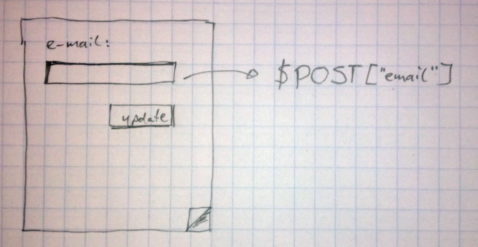
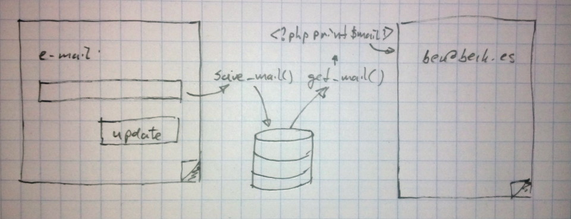
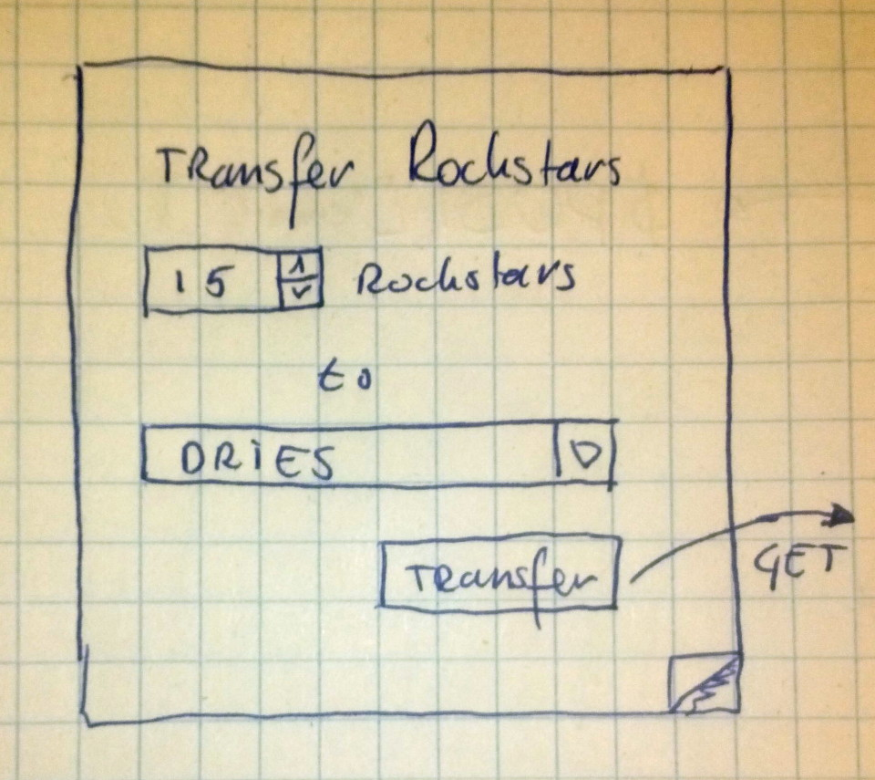

| z, ? | toggle help (this) |
| space, → | next slide |
| shift-space, ← | previous slide |
| b | blank screen |
| d | toggle debug mode |
| ## <ret> | go to slide # |
| c, t | table of contents (vi) |
| f | toggle footer |
| g | toggle follow |
| r | reload slides |
| n | toggle notes |
| p | run preshow |
| P | toggle pause |
| s | choose style |
SQL-injectie kan gebeuren als invoer van gebruikers op onvoldoende gecontroleerde wijze wordt verwerkt in een SQL-statement. Om de precieze werking van SQL-injectie te begrijpen is het belangrijk om te weten hoe SQL werkt.
Vraag: wie weet wat SQL is?

UPDATE users
SET
(email = 'ber@berk.es')
WHERE id = 1337"UPDATE users
SET
(email = '{$POST["email"]}'
WHERE id = {current_user()->id}"
$email = $POST["email"];
$id = current_user()->id;
"UPDATE users
SET
(email = '{$email}'
WHERE id = {$id}"$POST['email'] =
"ber@berk.es', role = 'admin"wordt:
UPDATE users
SET
(email = 'ber@berk.es', role = 'admin')
WHERE id = 1337"SELECT * FROM articles
LIMIT({$per_page}, {$page})"met: http://example.com/articles?page=12
$page =
"12); DROP TABLE payments WHERE (1=1"
$page =
"13) INTO OUTFILE '/uploads/data.txt'"user = User.find(1337)
user.update_attributes(email: email)
Account.where('name LIKE ?', pattern)PREPARE user (int) AS
SELECT * FROM users WHERE id = $1);
EXECUTE user(1);' met ``. en meer
drupal_cms heeft schrijfrechten.drupal_frontend heeft read-only rechten.Het probleem wordt veroorzaakt doordat de invoer die de webapplicatie ontvangt (zoals cookie, url, request parameters) niet juist wordt verwerkt en hierdoor in de uitvoer terecht komt naar de eindgebruiker.
Vraag: wie weet wat JavaScript kan doen?

<i><?php print $email ?></i>ber@berk.es</i><script>
var xhr = new XMLHttpRequest();
xhr.open("POST", "/account", true);
xhr.setRequestHeader("Content-type", "application/x-www-form-urlencoded");
xhr.send("password=compromised");
</script><i>"Please check the" +
"confirmation at %{email}"msg = "Users with changed emails:<br>"
User.updated(2.days.ago).each do |user|
msg += "* %{user.email}<br>"
end<select><script>
document.write("<OPTION value=1>"
+document.location.href.substring(
document.location.href.indexOf("default=")
+8)+"</OPTION>");
document.write("<OPTION value=2>English</OPTION>");
</script></select>Normaal aangeroepen met: http://www.some.site/page.html?default=French
Nu aangeroepen met: http://www.some.site/page.html?default=<script>alert(document.cookie)</script>
htmlspecialchars($email)<?php print htmlspecialchars($email) ?>
@@@php
$message = "Please check <i>{$email}</i>";
print htmlspecialchars($message);
#=> Please check <i>example@example.com</i>json_encode)print, echo e.d aan te roepen.Bad:
<?php print $insecure; ?>Good:
<?php r($insecure); ?>
<?php r($was_it_already_sanitized); ?>Bad:
$username = current_user()->name;
$message = t('Successfully logged in %user', $username);
<?php print check_plain($username); ?>
<?php print $message; ?>Good:
<?php print check_plain($username); ?>
<?php print check_plain($message); ?>Beter:
<?php r($username); ?>
<?php r($message); ?>class View {
function r($renderable) {
if (!$renderable instanceof Renderable)
$renderable = \
new Renderable($renderable);
}
if (!$renderable->is_sanitized()) {
Sanitizer->sanitize($renderable);
}
print $renderable->content;
return $renderable->content;
}
}(session-riding)
exploit of a website whereby unauthorized commands are transmitted from a user that the website trusts. Unlike cross-site scripting (XSS), which exploits the trust a user has for a particular site, CSRF exploits the trust that a site has in a user's browser.
Vraag: wie weet welke HTTP verbs er zijn?

http://example.com/transfer?amount=12&to=1
<img src="http://example.com/transfer?amount=42&to=1337"/>var xhr = new XMLHttpRequest();
xhr.open("POST", "http://example.com/transfer/", true);
xhr.setRequestHeader("Content-type", "application/x-www-form-urlencoded");
xhr.send("amount=42&to=1337");def token
env['rack.session'][key] ||= SecureRandom.base64(32)
end
def tag
%Q(<input type="hidden" name="csrftoken" value="{token}" />)
end
def call(env)
raise InvalidCsrfToken unless env.params[:csrftoken] == token
endSet-Cookie: Csrf-token=i8XNjC4b8KVok4uw5RftR38Wgp2BFwql; expires=Thu, 23-Jul-2015 10:25:33 GMT; Max-Age=31449600; Path=/
var xhr = new XMLHttpRequest();
xhr.open("POST", "http://example.com/transfer/", true);
xhr.setRequestHeader("Content-type", "application/x-www-form-urlencoded");
xhr.setRequestHeader("X-Csrf-Token", "i8XNjC4b8KVok4uw5RftR38Wgp2BFwql");
xhr.send("amount=42&to=1337");<meta content="intwIVdk5ItyCj+ZdiQpTGBv2UBk4RQ5PwjkslscXig=" name="csrf-token" />Uitleesbaar met:
document.getElementsByTagName('meta').item(property='csrf-token');(extra tijd)
(extra tijd)
def password_digest(password)
Bcrypt.create(password + SECRET)
end
def validate_login
user = User.find_by(name: params[:username])
if user
raise InvalidLogin if user.password == password_digest
end
enddef prevent_access_with_404
if current_user.can_read_project?(params[:id])
render Project.find(params[:id])
else
render_404
end
enddef validate_login
user = User.find_by(
name: params[:username]
password_digest: params[:password])
raise InvalidLogin unless user
end